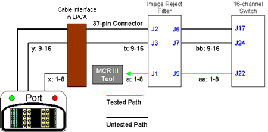
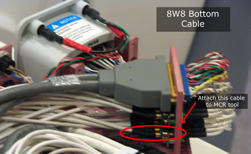

Illustration 12: 8W8 Bottom Test

Once the system is ready to perform this test, you will be asked to take the bottom 8-channel connector off the Service Hub and connect it directly to the MCR tool. See Illustration 13. Once this test is complete, you may automatically proceed to the 8W8 Top test. Note the results, make the cable changes as instructed, and proceed.
Illustration 13: MCR Tool Connect Location for 8W8 Bottom
